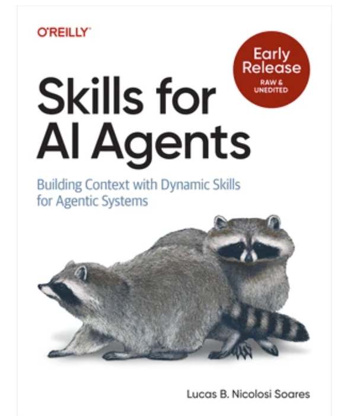
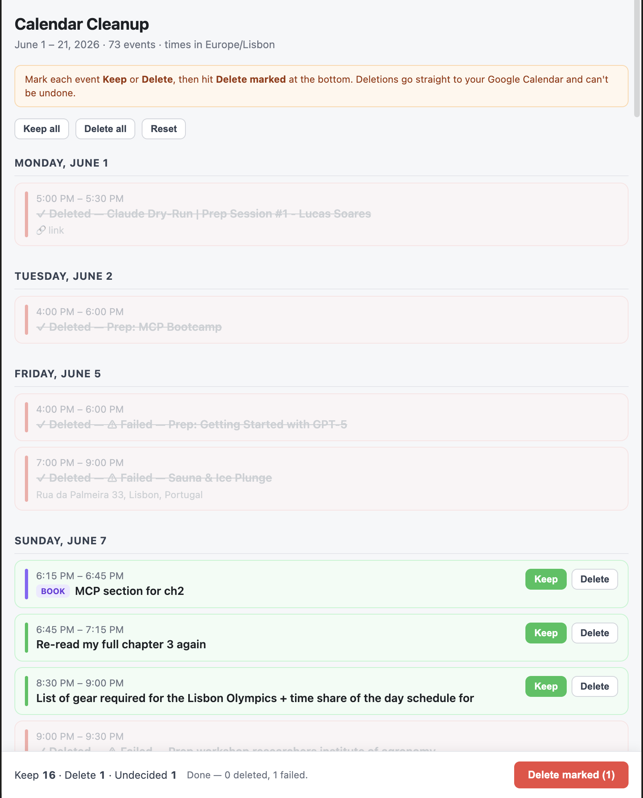
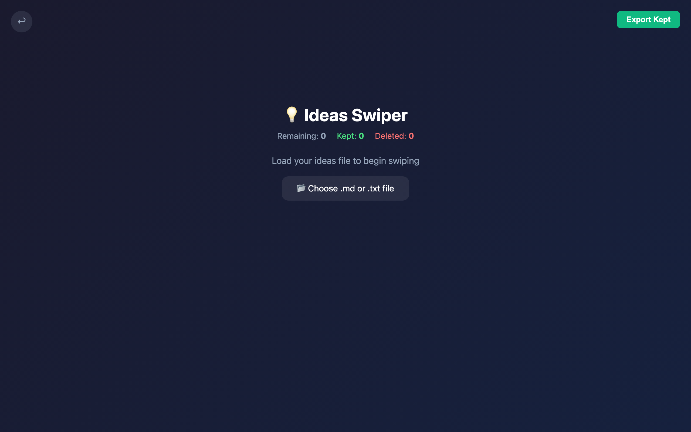
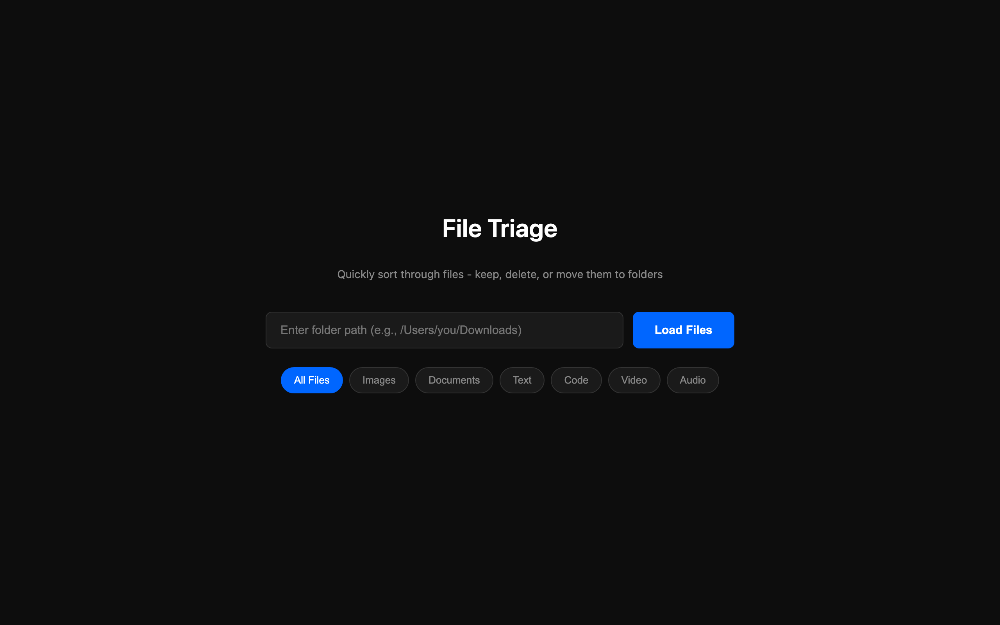
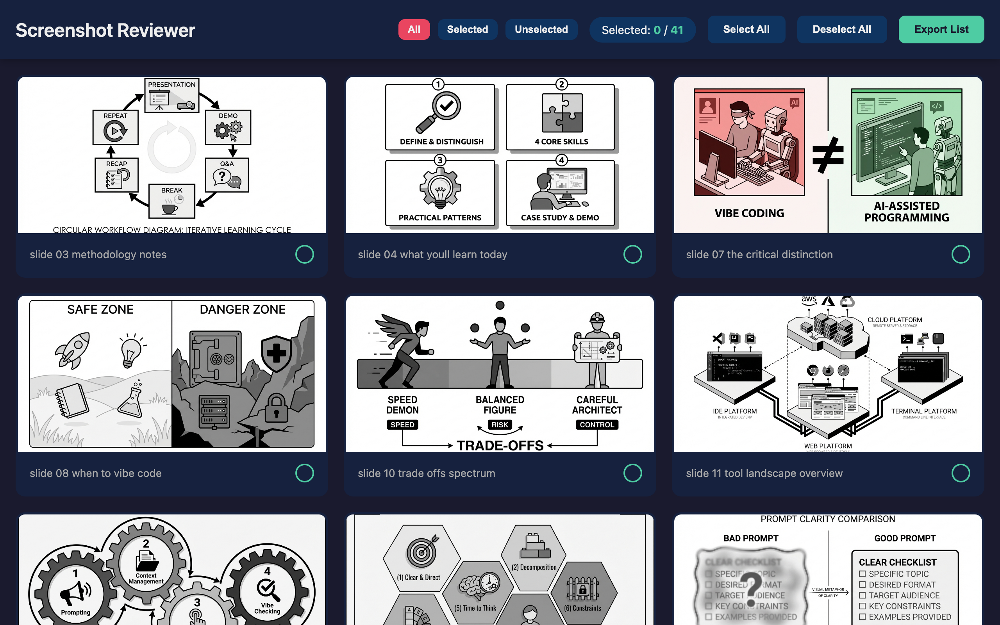
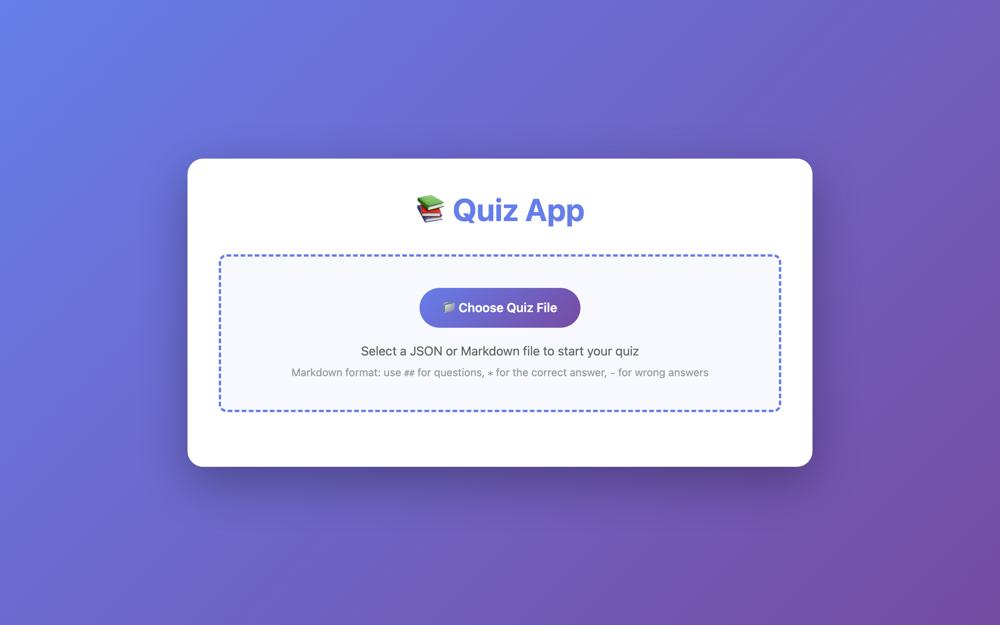
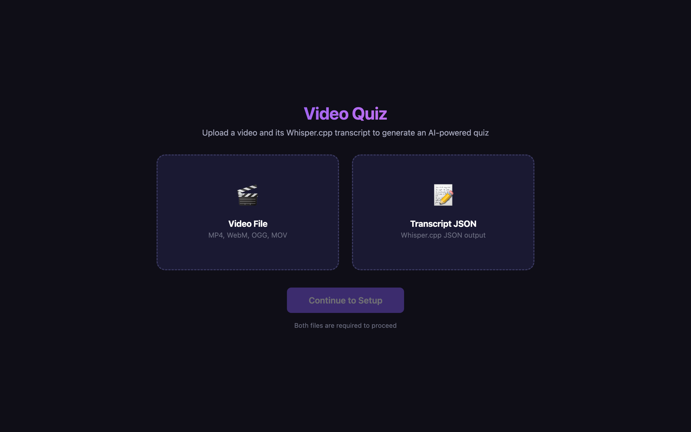
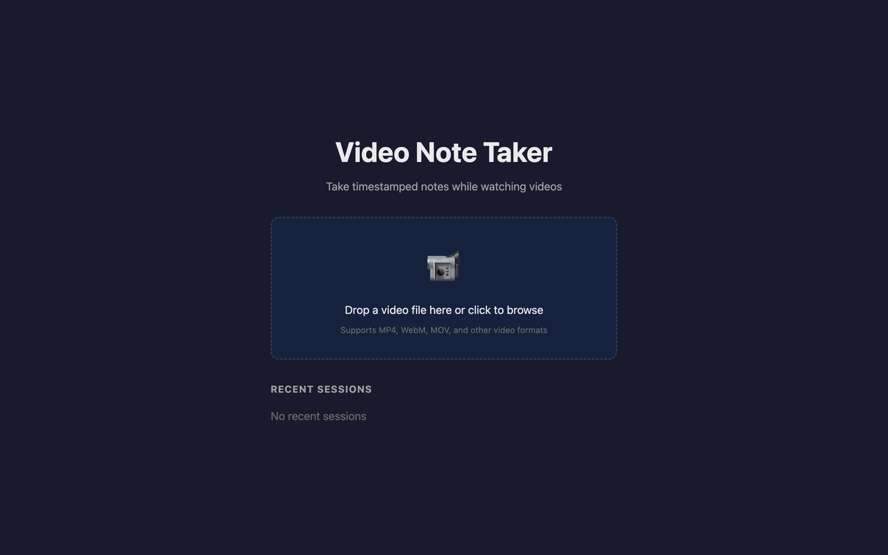
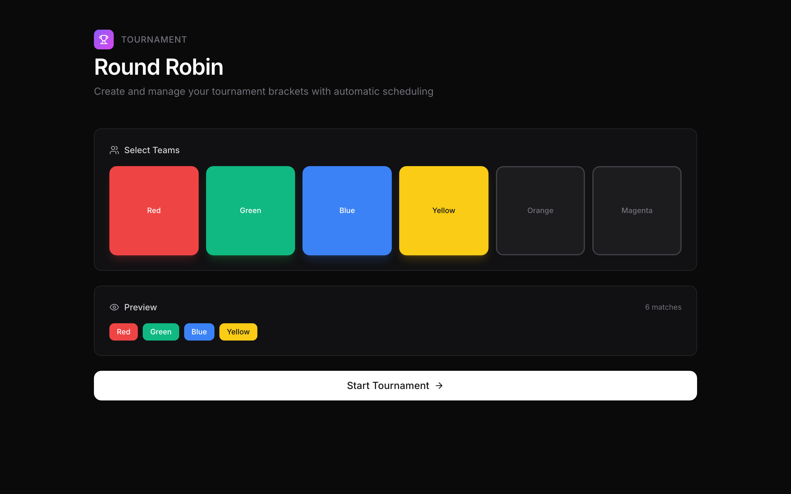
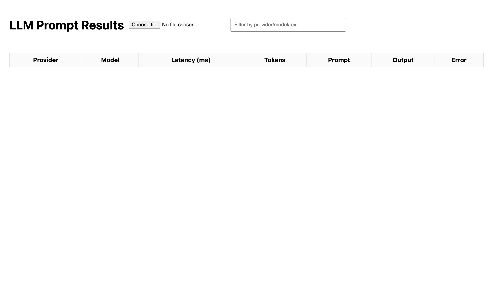

class: center, middle, dark .kicker[O'Reilly Live Training] # Vibe Coding for Problem Solvers ## Solve your own problems with tiny apps <p class="dim" style="margin-top:40px;">Lucas Soares · Automata Learning Lab</p> --- # About me <div class="two-13" style="margin-top:24px;"> <div style="display:flex;gap:22px;align-items:flex-end;"> <div class="frame" style="flex:0 0 auto;"> <div class="bar"><i class="d1"></i><i class="d2"></i><i class="d3"></i></div> </div> <p></p> </div> <div> <p class="lead">AI Engineer & Instructor.</p> <p class="dim" style="font-size:.85em;">I ship a throwaway little app almost every day — just to get my own work done faster.</p> <p style="margin-top:24px;"> <span class="tag">Author · <em>Skills for AI Agents</em> (O'Reilly)</span> <span class="tag">YouTube · @automatalearninglab</span> </p> </div> </div> --- class: middle .kicker[The whole course on one slide] # It's one loop. <div class="loop"> <div class="node"><div class="n">01</div><div class="t">A problem</div><div class="s">Something annoying in my daily work</div></div> <div class="arr">→</div> <div class="node"><div class="n">02</div><div class="t">Vibe-code it</div><div class="s">A tiny app, in minutes</div></div> <div class="arr">→</div> <div class="node"><div class="n">03</div><div class="t">A lesson</div><div class="s">What worked? What didn't?</div></div> <div class="arr">→</div> <div class="node"><div class="n">04</div><div class="t">Trash · Reuse · Skillify</div><div class="s">Keep it only if it earns it</div></div> </div> <p class="center-x dim" style="margin-top:46px;font-size:.85em;">Everything today is one turn of this loop — again and again.</p> --- class: middle .kicker[What vibe coding actually is] <p class="lead" style="max-width:18em;">Building software with an LLM, with little or no code review —</p> <p class="lead" style="max-width:18em;color:var(--accent);">fine, because the stakes are small and the app is yours.</p> <p class="dim small" style="margin-top:40px;">No spectrum charts. When it's your own small tool, speed beats ceremony.</p> .footnote[Definition adapted from Simon Willison, 2025] --- class: middle .kicker[Cold open · a real problem this week] <div class="two-13"> <div> <p class="lead">73 events to triage on my calendar.</p> <p class="dim" style="font-size:.85em;">I did not want to click through the calendar app one by one.</p> <p style="margin-top:20px;font-family:'Space Grotesk';font-weight:600;color:var(--accent);">So I made this in 5 minutes. →</p> </div> <div class="frame"> <div class="bar"><i class="d1"></i><i class="d2"></i><i class="d3"></i></div> <p></p> </div> </div> <p class="center-x dim small" style="margin-top:24px;">Mark Keep or Delete, hit the button — deletions go straight to Google Calendar. The decision <em>is</em> the workflow.</p> --- class: center, middle, dark .kicker[A quick tour] # Real problems → tiny apps --- # Decision decks <p class="dim" style="margin-top:-6px;font-size:.8em;">Bulk small decisions you dread doing in the real app. Scrolling becomes deciding.</p> <div class="grid g3"> <div> <div class="frame"><div class="bar"><i class="d1"></i><i class="d2"></i><i class="d3"></i></div><p></p></div> <div class="cap"><b>Idea swiper</b>Keep or kill ideas, fast</div> </div> <div> <div class="frame"><div class="bar"><i class="d1"></i><i class="d2"></i><i class="d3"></i></div><p></p></div> <div class="cap"><b>File triage</b>Sort a messy folder</div> </div> <div> <div class="frame"><div class="bar"><i class="d1"></i><i class="d2"></i><i class="d3"></i></div><p></p></div> <div class="cap"><b>Screenshot reviewer</b>Triage your screenshots folder</div> </div> </div> --- # Learn from your own stuff <p class="dim" style="margin-top:-6px;font-size:.8em;">Turn a document, article, or video into a way to test yourself.</p> <div class="grid g2"> <div> <div class="frame"><div class="bar"><i class="d1"></i><i class="d2"></i><i class="d3"></i></div><p></p></div> <div class="cap"><b>Quiz app</b>Drop a doc → get quizzed</div> </div> <div> <div class="frame"><div class="bar"><i class="d1"></i><i class="d2"></i><i class="d3"></i></div><p></p></div> <div class="cap"><b>Video quiz</b>Video + transcript → quiz</div> </div> </div> --- # Keep it local <div class="two-13"> <div> <p class="lead">Some data should never leave your machine.</p> <p class="dim" style="font-size:.82em;">This note-taker plays your video locally and exports timestamped notes to a <code>.md</code> file. Nothing uploaded.</p> <p style="margin-top:14px;"><span class="tag">Video stays on device</span><span class="tag">Markdown export</span></p> </div> <div class="frame"> <div class="bar"><i class="d1"></i><i class="d2"></i><i class="d3"></i></div> <p></p> </div> </div> --- # Generators & one-off dashboards <div class="two"> <div> <div class="frame"><div class="bar"><i class="d1"></i><i class="d2"></i><i class="d3"></i></div><p></p></div> <div class="cap"><b>Round-robin tournament</b>A "fake Olympics" in an afternoon</div> </div> <div> <div class="frame"><div class="bar"><i class="d1"></i><i class="d2"></i><i class="d3"></i></div><p></p></div> <div class="cap"><b>Tiny dashboard</b>Whatever you're tracking this week</div> </div> </div> --- class: center, middle, dark # The same loop made all of these. <p class="dim" style="margin-top:20px;">Now let's slow down and learn the moves.</p> --- class: center, middle, accent .kicker[Part two] # The moves --- .kicker[Move 1 · Prompting] # Prompting is a workflow, not a checklist. <div class="duo" style="margin-top:30px;"> <div class="card no"> <h3>The old way</h3> <p class="small dim" style="margin:0;">Memorize six generic "prompt patterns" and hope.</p> </div> <div class="card ok"> <h3>The real way</h3> <p class="small" style="margin:0;color:var(--ink);">"I'm in Claude / Claude Code. I want to do <em>this</em>, then <em>this</em>. Here's how I actually talk to it."</p> </div> </div> --- .kicker[Move 1 · the build, narrated by the prompts] # Building a decision deck, prompt by prompt <div class="prompt"><span class="step">1 · clear first ask</span>Build a single-file HTML app that loads a folder and shows one file at a time.</div> <div class="prompt"><span class="step">2 · iterate on what works</span>Add left/right arrow keys to swipe, and a keep/delete counter at the top.</div> <div class="prompt"><span class="step">3 · decompose the hard part</span>Wire keep/delete to write a decisions.json I can run later.</div> <div class="prompt"><span class="step">4 · show, don't tell</span>Match the layout in this screenshot. Single file, no React.</div> --- .kicker[Move 1 · two tools, one tiny problem] # Let each tool do what it's best at <div class="two"> <div class="prompt" style="border-color:var(--accent-2);border-left-color:var(--accent-2);"> <span class="step" style="color:#7fd1bf;">Codex — autonomous task</span> Install playwright, scrape the full 3-day schedule from this URL, save it as JSON, open a PR. </div> <div class="prompt"> <span class="step">Claude — iterative UI</span> Turn that schedule into a mobile-friendly page. Fetch from the URL, don't inline the JSON. Add a "download ICS" button. </div> </div> <p class="center-x dim small" style="margin-top:26px;">One scrapes while you sleep. One builds while you watch. Same little problem.</p> .footnote[Simon Willison — vibe-scraping Open Sauce 2025] --- .kicker[Move 2 · Vibe checking] # Don't review every line. Check the things that bite. <p class="lead" style="max-width:16em;margin-top:20px;">For an app like this, here's what actually matters —</p> <p class="dim" style="font-size:.85em;">from dead simple to slightly technical.</p> --- .kicker[Move 2 · the must-knows] # Security, simple → technical <ul class="check" style="font-size:.9em;margin-top:10px;"> <li><strong>Never</strong> put API keys anywhere that can go public.</li> <li>Store keys in <strong>localStorage</strong> — they never touch a server. <span class="dim small">(Simon Willison's tip)</span></li> <li>Keep sensitive data <strong>local</strong>. The video app? Video stays on the device.</li> <li>Watch payload size: <strong>176 requests, 130 MB</strong> is the kind of thing a vibe check catches.</li> </ul> --- .kicker[Move 2 · how much checking is enough] # Enough vs. stop and think <div class="duo"> <div class="card ok"> <h3>A vibe check is enough</h3> <ul> <li>Personal & local</li> <li>Throwaway / one-off</li> <li>Only you will use it</li> </ul> </div> <div class="card no"> <h3>Stop and think</h3> <ul> <li>Anything public</li> <li>Other people's data</li> <li>Anything you'd hate to leak</li> </ul> </div> </div> --- .kicker[Move 3 · Capability] # Which tool for which job <div class="grid g2" style="gap:18px;font-size:.78em;"> <div class="card"><h3 style="color:var(--accent)">Claude artifact</h3><p style="margin:0" class="dim">Instant single-file UI. Start here.</p></div> <div class="card"><h3 style="color:var(--accent)">Claude Code</h3><p style="margin:0" class="dim">Multi-file, your local files, MCP tools.</p></div> <div class="card"><h3 style="color:var(--accent)">Codex</h3><p style="margin:0" class="dim">Autonomous, walk-away tasks.</p></div> <div class="card"><h3 style="color:var(--accent)">v0 / Vercel</h3><p style="margin:0" class="dim">When it needs to be deployed.</p></div> </div> <p class="center-x dim small" style="margin-top:22px;">Pick by the job, not the feature list.</p> --- .kicker[Move 3 · models] # Leaderboards, made actionable <p class="lead" style="max-width:17em;">Unsure which model for a job? Check one board, take the top, move on.</p> <ul class="check" style="font-size:.82em;margin-top:18px;"> <li><strong>LM Arena</strong> — general "which model feels smartest right now"</li> <li><strong>Artificial Analysis</strong> — speed & price per task</li> </ul> <p class="dim small" style="margin-top:14px;">Models have training cut-offs → when in doubt, paste fresh docs into context.</p> --- class: middle .kicker[Move 4 · the part that makes it a practice] # "What did I just learn?" <div class="loop" style="margin-top:24px;"> <div class="node" style="border-color:var(--muted)"><div class="t">Trash it</div><div class="s">Did its job. Let it go.</div></div> <div class="arr">·</div> <div class="node" style="border-color:var(--accent-2)"><div class="t" style="color:var(--accent-2)">Reuse it</div><div class="s">Keep it handy for next time</div></div> <div class="arr">·</div> <div class="node" style="border-color:var(--accent)"><div class="t" style="color:var(--accent)">Skillify it</div><div class="s">Promote to a reusable skill</div></div> </div> --- # How small? Local or deployed? <div class="duo" style="margin-top:24px;"> <div class="card ok"> <h3>Defaults that save you</h3> <ul> <li>As small as the problem — no smaller, no bigger</li> <li>Default to <strong>local</strong> (a file you open)</li> </ul> </div> <div class="card"> <h3>Deploy only when…</h3> <ul> <li>Someone else needs to use it</li> <li>Then: drop it on Vercel</li> </ul> </div> </div> --- class: middle .kicker[Move 4 · the signal] # Rebuilt it three times? Make it a skill. <p class="lead" style="max-width:18em;margin-top:10px;">Repetition is the signal to promote a throwaway app into a reusable <strong>agent skill</strong> or command.</p> <p style="margin-top:20px;"><span class="tag">See: my book on Agent Skills</span></p> --- class: center, middle, accent .kicker[Part three] # Patterns you can use tomorrow --- <div class="pat"> <div class="num">1</div> <div> <h2>Start with a prototype, not a spec</h2> <p class="dim">Get something working in 5 minutes. Iterate on what's real, not on a doc.</p> </div> </div> --- <div class="pat"> <div class="num">2</div> <div> <h2>Let it see what you see</h2> <p class="dim">Paste the full error. Screenshot the broken UI. Context beats description.</p> </div> </div> --- <div class="pat"> <div class="num">3</div> <div> <h2>Restart when stuck</h2> <p class="dim">Going in circles for 10+ min? Fresh chat, a tiny handoff of state, continue clean.</p> </div> </div> --- <div class="pat"> <div class="num">4</div> <div> <h2>Automate the repeatable step</h2> <p class="dim">Ask for one self-contained <code>uv</code> script. Paste, <code>uv run</code>, done.</p> </div> </div> <div class="prompt" style="margin-top:24px;max-width:30em;"> # /// script<br> # requires-python = ">=3.12"<br> # dependencies = ["requests"]<br> # /// </div> --- <div class="pat"> <div class="num">5</div> <div> <h2>Raw → structured</h2> <p class="dim">Messy notes in, clean JSON out. Notes → calendar, ideas → tasks.</p> </div> </div> --- <div class="pat"> <div class="num">6</div> <div> <h2>The decision deck</h2> <p class="dim">Bulk small decisions → a swipe UI. The signature move of this whole course.</p> </div> </div> --- class: middle .kicker[The meta-skill] # It works for thinking, too. <p class="lead" style="max-width:18em;">Swap "apps" for "ideas" and "prototypes" for "rough answers." Same loop — AI as an engine for quick, disposable thinking.</p> --- class: center, middle, dark # The loop, once more <div class="loop" style="margin-top:30px;"> <div class="node" style="background:transparent;border-color:var(--cream);color:var(--cream)"><div class="t" style="color:var(--cream)">Problem</div></div> <div class="arr" style="color:#ff9a7a">→</div> <div class="node" style="background:transparent;border-color:var(--cream);color:var(--cream)"><div class="t" style="color:var(--cream)">Tiny app</div></div> <div class="arr" style="color:#ff9a7a">→</div> <div class="node" style="background:transparent;border-color:var(--cream);color:var(--cream)"><div class="t" style="color:var(--cream)">Lesson</div></div> <div class="arr" style="color:#ff9a7a">→</div> <div class="node" style="background:transparent;border-color:var(--cream);color:var(--cream)"><div class="t" style="color:var(--cream)">Trash · Reuse · Skillify</div></div> </div> <p class="dim" style="margin-top:40px;">Go make one this week.</p> --- class: middle, dark .kicker[Connect with me] # Keep vibing, keep building <p style="line-height:2;font-size:.85em;margin-top:20px;"> <a href="https://github.com/EnkrateiaLucca/vibe-coding-problem-solvers">Course materials — GitHub</a><br> <a href="https://www.linkedin.com/in/lucas-soares-969044167/">LinkedIn — Lucas Soares</a><br> <a href="https://x.com/LucasEnkrateia">X — @LucasEnkrateia</a><br> <a href="https://www.youtube.com/@automatalearninglab">YouTube — @automatalearninglab</a><br> <span class="dim">lucasenkrateia@gmail.com</span> </p>